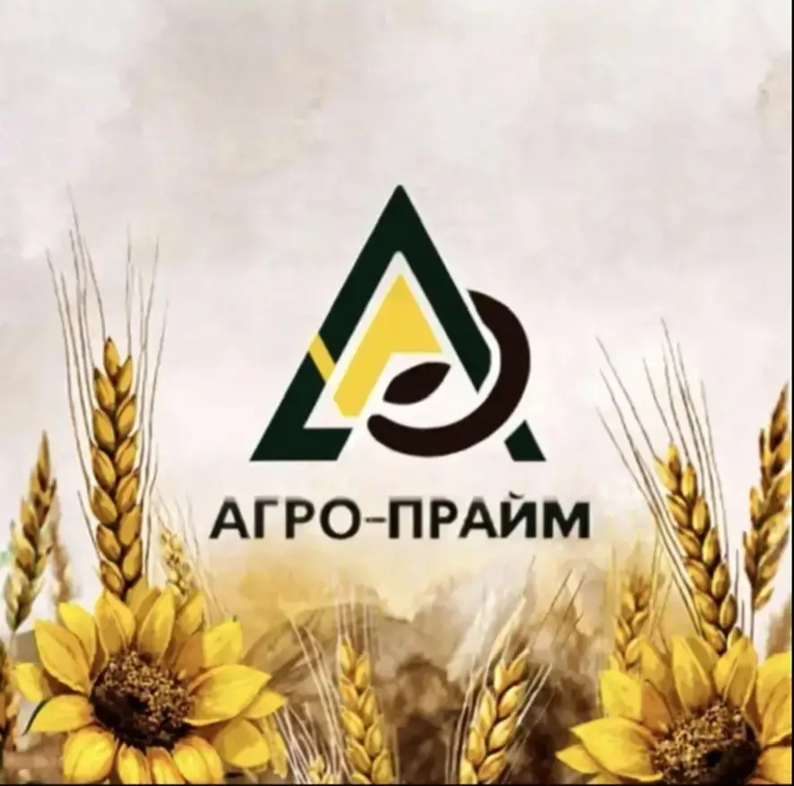

Оперативный ответ
Вопросы по объёмам, срокам и логистике решает руководитель — без длинных цепочек согласований. Вы сразу понимаете, что возможно и в какие сроки.

ООО «АГРО-ПРАЙМ»
Опт по зерновым и зернобобовым культурам, а также масличным — оперативно закрываем заявки с понятной логикой поставок и прямой связью с руководителем, без лишних посредников.
Работаем в Оренбургской области и готовы обсудить поставки в ваш регион
С чем к нам обращаются
Вопросы по объёмам, срокам и логистике решает руководитель — без длинных цепочек согласований. Вы сразу понимаете, что возможно и в какие сроки.
В работе зерновые и зернобобовые, масличные культуры — проще согласовать объёмы, именно нужную культуру, условия поставки и документы, если запрос однородный и конкретный.
Работаем по проверенной юридической структуре ООО с актуальными реквизитами. Удобно для бухгалтерии и банков, если вам важен закрытый цикл документооборота.
Компания зарегистрирована в Бузулуке, ориентирована на поставки в агроцепочки Оренбуржья. Открыты к долгосрочному сотрудничеству, если форматы поставок совпадают.
ООО «Агро-Прайм» — действующая организация, зарегистрированная 21.11.2025. На практике — оптовая торговля: зерновые и зернобобовые культуры, масличные культуры.
Руководитель: Крыгин Дмитрий Николаевич — с ним вы можете обсудить условия и сформировать поставку под ваши задачи.
ОКВЭД 46.21
В ЕГРЮЛ указан код 46.21 (оптовая торговля зерном и смежными категориями по классификатору). На рынке работаем с зерновыми и зернобобовыми, масличными — объёмы, культура и срок подбираются под вашу заявку.
Один звонок — дальше решаем вместе
Зерновые и зернобобовые, масличные — подберём формат поставки и дальнейшие шаги по сделке. Звоните в рабочее время: ответит руководитель или перезвоним в течение дня. Можно написать на ooo.agro-praim@mail.ru.
Полезно для договора, счетов и проверок контрагента
461041, Оренбургская область, г. Бузулук, ул. Рабочая, д. 81, офис 514